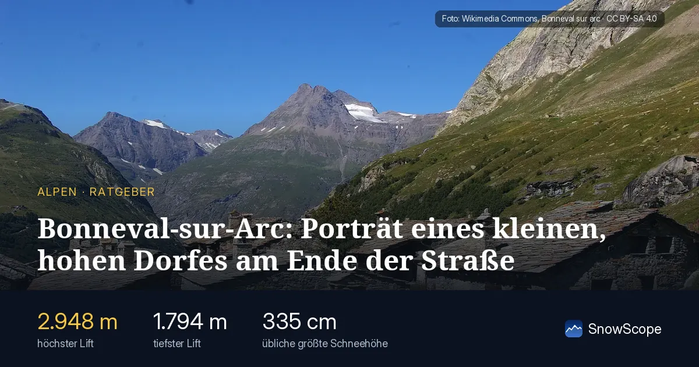

Bonneval-sur-Arc: Porträt eines kleinen, hohen Dorfes am Ende der Straße
Bonneval-sur-Arc ist von hohen Alpen umgeben und wird im Winter abgeschnitten. Der Col de l'Iseran, der höchste asphaltierte Pass der Alpen mit 2.764 m, ist von November bis Juni für Autos gesperrt und lässt ein kleines Dorf von etwa 285 Einwohnern mit eigenem ruhigen Skigebiet zurück. Diese Abgeschiedenheit ist das Besondere: sehr große Höhe, zuverlässiger Schneefall und wenige Menschenmassen.
Die Live-Schneeprognose für Bonneval-sur-Arc in der SnowScope-AppSchneehöhen, Pulverschnee-Alarme und 3D-Karte, gratis.
Ein Dorf in den Bergen
Bonneval liegt in der Haute-Maurienne an der italienischen Grenze und teilweise im Nationalpark Vanoise. Das Dorf zählt zu den schönsten Dörfern Frankreichs mit seinen traditionellen Steindächern und engen Gassen. Das Gelände rund um das Dorf erhebt sich von 1.759 m bis 3.642 m – das sagt dir sofort, dass die Winter hier kalt und lang sind.
Im Winter endet das Arc-Tal bei Bonneval. Du erreichst es nur von der Maurienne-Seite. Diese Abgeschiedenheit ist real: Prüfe vor deiner Fahrt die Straßenbedingungen im Tal und bestätige auf der offiziellen Website, dass die Lifte in Betrieb sind.

Kleines Gebiet, große Höhe
Das Skigebiet ist bescheiden groß: etwa 10 Lifte und 20 km Pisten, von 1.794 m bis 2.948 m ansteigend. Das ist nach Savoyer Maßstäben nicht groß, aber die Höhe ist alles hier. Der Höhenunterschied beträgt 1.154 m, und du kannst das ganze Gebiet an einem Morgen lernen. Für Familien mit kleinen Kindern und Anfänger, die ruhige Pisten wollen, ist das ein Vorteil.
Starke Skifahrer, die mehr als die markierten Pisten wollen, müssen mit einem Guide gehen. Skifahren abseits der Pisten erfordert täglich das Lawinen-Bulletin von Météo-France. Lies es, bevor du die Pisten verlässt.
Schneehöhe nach Jahreszeit
Die Höhe gibt Bonneval mehr Schnee als seine Größe vermuten lässt. In der Talstation, 1.794 m, liegt die typische maximale Schneehöhe über 46 vergangene Winter bei etwa 99 cm – vergleichbar mit dem, was viele größere Resorts nur auf Mittenstationen sehen. Das reicht zum Skifahren, ist aber früh in der Saison dünn und kann Steine freigeben.
Auf Mittenberg, 2.371 m, ist das Muster klarer. Typische Schneehöhen sind 26 cm im November, 66 cm im Dezember, 103 cm im Januar, 128 cm im Februar und 134 cm im März. Der typische Höchststand hier liegt bei etwa 172 cm. In dieser Höhe liegen mindestens 50 cm Schnee 15 Wochen lang in neun von zehn Wintern auf dem Boden.
Obere Hänge bleiben bis ins Frühjahr tief
Oben am Berg, 2.948 m, ist die Saison viel länger und der Schnee tiefer. Der typische Höchststand liegt bei etwa 335 cm – mehr als dreimal die Talstation. Der tiefste Monat hier ist der April mit typisch etwa 272 cm. Der erste Schnee erreicht diese Höhe um 30. September, und die letzten Flecken schmelzen um 19. Juni.
Dieser Höhenunterschied ist der Grund, warum Bonneval im Frühjahr lange offen bleibt. Auch im Mai hat der Gipfel typisch etwa 214 cm. Die oberen Hänge sind dort, wo sich die Saison am längsten erstreckt.
Wann zu kommen
Für den zuverlässigsten Schnee am unteren Ende des Gebiets ist Februar der beste Monat. Die beste Woche der Saison auf 1.794 m hat mindestens 50 cm in 85 Prozent der Winter. Der Schnee dort erreicht seinen Höhepunkt im Februar und März. Im November kann die Talstation dünn sein; erwarte typisch etwa 10 cm. Warte bis mindestens Dezember, wenn du gute Bedingungen unten willst.
Höher oben ist die Saison lang und zuverlässig. Der erste Schnee erreicht 2.371 m um 7. Oktober. Um Mitte November sind dort typisch 26 cm üblich. Von Dezember an sind 50 cm oder mehr 15 Wochen lang typischerweise in neun von zehn Wintern üblich.
Trends im Zeitverlauf
Der Schnee hier war stabil. In der Talstation, 1.794 m, lag der Medianmaximum in den ersten fünfzehn Wintern bei etwa 100 cm und in den letzten fünfzehn bei etwa 101 cm. Auf Mittenberg, 2.371 m, fiel das Maximum leicht von etwa 176 cm auf etwa 169 cm, aber die Gesamttage mit Schneebedeckung sanken stärker – von etwa 256 auf 225. Der letzte Winter, 2025–26, war nahe normal mit einem Maximum von etwa 167 cm in dieser Höhe.
Tipps für Skifahrer
- Erreiche Bonneval nur vom Maurienne-Tal aus; die Iseran-Straße ist im Winter geschlossen. Prüfe die Straßenbedingungen im Tal, bevor du fährst.
- Für Familien und Anfänger bieten Februar und März den zuverlässigsten Schnee in der Talstation und auf Mittenberg.
- Dünner Schnee im November bedeutet, dass Steine am unteren Ende des Gebiets sichtbar sein können. Warte bis Dezember, wenn du Bedeckung willst.
- Skitourengeher müssen mit einem Guide gehen und täglich das Lawinen-Bulletin von Météo-France lesen.
- Prüfe vor deiner Fahrt die offizielle Website, um zu bestätigen, welche Lifte offen sind.
Zu diesen Zahlen
Die Schneehöhen der Skigebiete sind der meiste Schnee in den oberen Hängen am angegebenen Tag; es sind Schätzungen für eine Fläche, keine Messung an einem Punkt. Prognosen können sich ändern. Lies vor dem Freeriden immer den offiziellen Lawinenlagebericht.
Offizielle Lawinenlageberichte: Météo-France BERA
Diesen Bericht zitieren
Für Forschung, Lehre oder Presse: Zahlen und Grafiken sind unter CC BY 4.0 mit dieser Quellenangabe frei nutzbar.
SnowScope (2026), Bonneval-sur-Arc: Porträt eines kleinen, hohen Dorfes am Ende der Straße, https://snowscope.app/blog/de/2026/11/bonneval-sur-arc-portrait-small-high-village-snow.html, abgerufen am 2026-11-09
SnowScope (Atlas Labs). (2026, November 9). Bonneval-sur-Arc: Porträt eines kleinen, hohen Dorfes am Ende der Straße. SnowScope snow reports. https://snowscope.app/blog/de/2026/11/bonneval-sur-arc-portrait-small-high-village-snow.html
BibTeX
@misc{snowscope2026bonnevalsurarcportraitsm,
author = {{SnowScope (Atlas Labs)}},
title = {Bonneval-sur-Arc: Porträt eines kleinen, hohen Dorfes am Ende der Straße},
year = {2026},
month = nov,
howpublished = {\url{https://snowscope.app/blog/de/2026/11/bonneval-sur-arc-portrait-small-high-village-snow.html}},
note = {Published 2026-11-09 11:38 UTC; accessed 2026-11-09}
}· CC BY 4.0 · Methoden, Daten und Werkzeuge →
Bonneval-sur-Arc: Schnee und Temperatur nach Höhe, dieser Winter vs letzter (Werkzeuge) →
Bonneval-sur-Arc folgen
Gratis: eine Nachricht, wenn Neuschnee kommt, und jeden Morgen die Vorhersage.